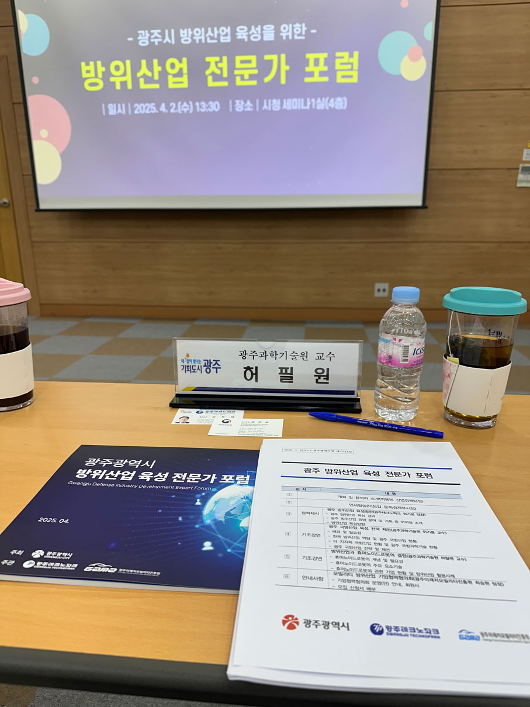

[2025/4/2] 방위산업과 휴머노이드 로봇 기조강연
작성자: 허필원
지난 4월 2일, 광주광역시와 광주테크노파크 주최로 열린 ‘광주광역시 방위산업 육성 포럼’에 초청받아 ‘방위산업과 휴머노이드 로봇의 결합’을 주제로 기조강연을 진행하였습니다.
이번 포럼은 광주시의 첨단 기술 역량과 산업 기반을 바탕으로 방위산업을 전략적으로 육성하기 위한 정책 방향과 실천 전략을 공유하는 자리였습니다. 저는 휴머노이드 로봇의 특징, 요소기술, 관련 기업, 방위산업에서의 휴머노이드 로봇 활용 예, 그리고 광주광역시가 해야할 일에 대한 이야기를 하였습니다.


CC BY-SA 4.0 Pilwon Hur. Last modified: April 06, 2025.
Website built with Franklin.jl and the Julia programming language.